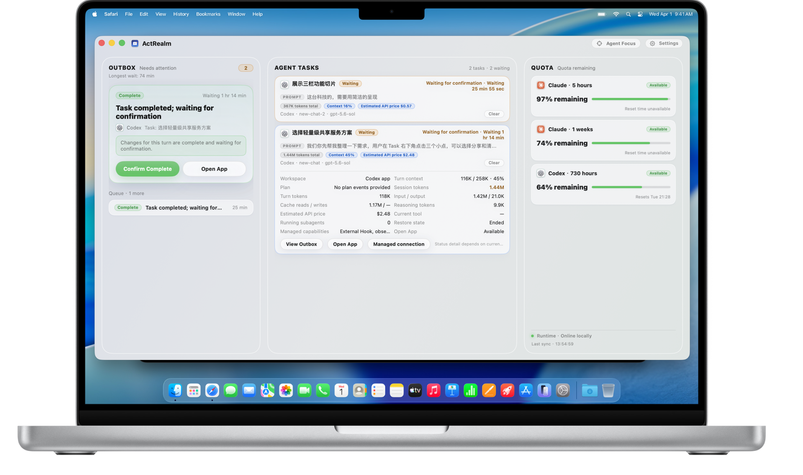
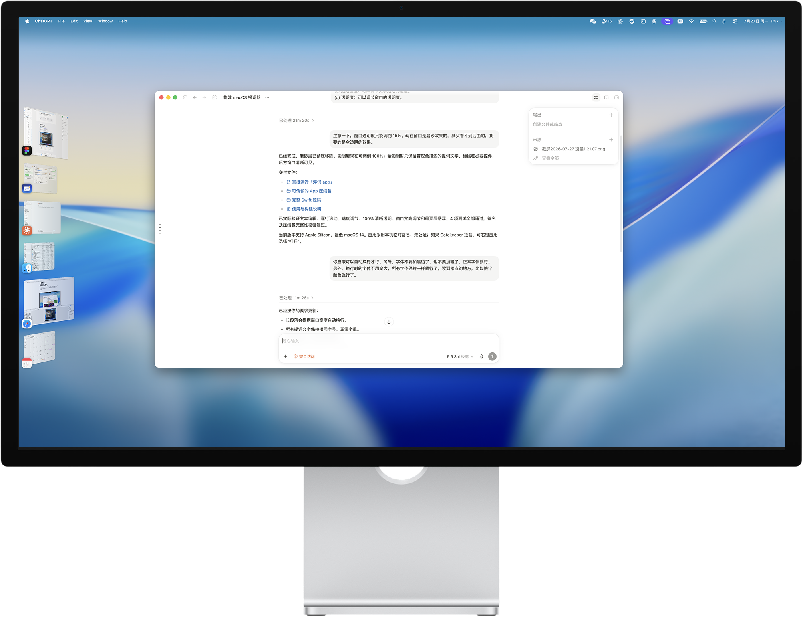
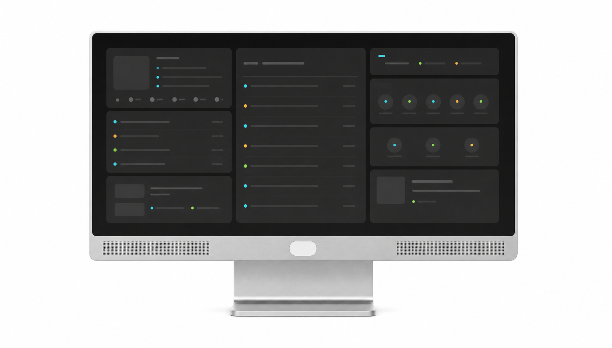

Refactor ActRealm sharing service Waiting
Waiting for confirmation · owner Frank · shared with Lin
ActRealm brings agent status, tasks, AI usage, and approvals into one workspace.
Agents run in the background. When human judgment is needed, the right task, context, and action go to the right person.
Changes for this run are complete and waiting for confirmation.
Waiting for confirmation · owner Frank · shared with Lin
Needs human judgment before changing the shared approval scope.
Running locally · progress and context remain attached to the task.
09:41:02 codex · refactor payment module · running
09:46:58 claude-code · schema change · awaiting approval
09:47:03 owner · shared with Lin · approval granted
09:47:16 → Lin's Outbox · waiting for action
Traditional operating systems manage apps, files, and device permissions. ActRealm adds the layer for agent tasks, working context, action approvals, and human handoff.
Hand work to Claude Code, Codex, or any other connected agent.
Each task keeps its own status, window anchor, and working context.
Status, time waiting, authorization requests, and restore points stay in one layer.
See the relevant evidence, risk, and context before authorizing or accepting.
ActRealm Dashboard brings task status, execution stage, AI usage, and pending actions into one view.
Switch between fewer windows while seeing what happened, how long an agent has been waiting, and whether you need to act.

Running, waiting, blocked, failed, review needed, complete, or offline.
Tokens, context, and estimated cost remain attached to the task.
Approvals, exceptions, and review requests appear together without repeating low-risk noise.
Share one selected Agent Task instead of exposing the whole workspace.
A recipient can add the task to their Task List. Its approvals enter their Outbox only when that person has been explicitly authorized.
A revocable link adds the task to another person's list without exposing the full workspace.
View only, participate in handling, or handle supported replyable approvals.
Sharing can expire or be revoked, while important actions keep an audit record.
Agent Focus organizes agents, terminals, browsers, and related tools inside a dedicated macOS workspace.
The direction builds on macOS Stage Manager to keep only the agents needed for the current task. Exact window switching and recovery behavior is still being validated.

For work that needs immediate handling and can justify an interruption.
Explain who is waiting and why, then open the workspace after confirmation.
Do not interrupt the current work. Handle it later in one pass.
The 12.3-inch ultrawide display extends the same control loop onto your desk: quietly sense status and switch tasks quickly.
It protects information and routes notifications when you step away. Form, specifications, and delivery remain subject to final hardware validation.

Use quiet ambient signals to show running, waiting, blocked, or complete.
Switch agents, enter focus mode, and handle low-risk actions.
Hide sensitive information and route notifications to mobile when you step away.
Traditional operating systems are built around apps, windows, and files. Agents introduce a new unit of work: a task that can keep running, wait for input, request permission, and return with results. ActRealm is the open operating layer between agent work and human control.— The ActRealm Project
The source is open today. M1 focuses on closing the approval loop, task status, quota visibility, and context return, starting with Claude Code and Codex on macOS. Try the current build, open an issue, or write an adapter for another agent tool.
GitHub · Star & Watch